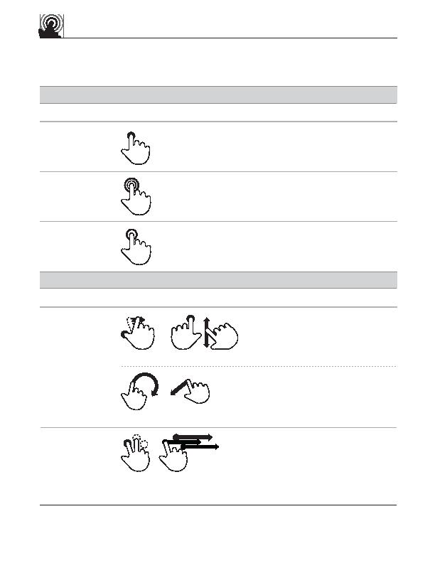

OR
1
2
touch gesture
reference guide
press
Change mode
double tap
Open
tap
Select
press and drag
Adjust
lasso and cross
press and tap, then drag
1
2
Bundle
r
Supporting materials for this guide can be found online:
http://www.lukew.com/touch/
Major User Actions
Currently supported by touch gesture systems
user action
gesture
description
BASIC ACTIONS
user action
gesture
description
OBJECT-RELATED ACTIONS
Press surface with one finger and move
second finger over surface without
losing contact
Make circular motion with finger, then
cross over selected object
Touch first object while second finger
taps other objects, the move selected
objects by dragging first finger
Touch surface for extended period of time
Rapidly touch surface twice with fingertip
Briefly touch surface with fingertip